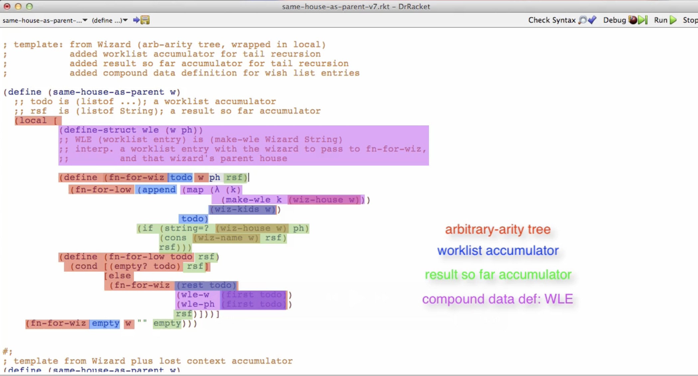

Systematic Program Design: Week 10 - Accumulators
Accumulators Module
The rules we have been using to generate structural recursion templates are very powerful. They make it very easy to write functions that traverse complex data collecting information at every place in that data. The power of these rules is highlighted by our ability to design abstract fold functions for recursive and mutually recursive types.
But the structural recursion templates have one problem, while they make it easy for our functions to see each "place" in the structure once we get to it, they do not allow us to see two kinds of important contextual information. One has to do with where our function has already been in the traversal, and the other has to do with work remaining to be done once each recursive call to our function produces its result. To paraphrase the song, "we know where we are, but we don't know where we've been or where we still need to go".
Accumulators allow us to solve these problems. There are three types of accumulators: context preserving, result so far and worklist. The latter two are used in different ways to make functions tail-recursive, which is important when we design recursive functions that traverse very large data. All three kinds of accumulators are supported by a few small additions to the HtDF recipe.
The material in this module includes a de-facto review of everything in the course so far. This review is part of the worklist accumulator videos. As a result, working through the videos and practice materials for this module will take approximately 9-10 hours of dedicated time to complete.
Learning Goals
- Be able to identify when a function design requires the use of accumulator.
- Be able to work with the accumulator design recipe to design such functions.
- Understand and be able to explain the concepts of tail position, tail call and tail recursion.
Context preserving accumulator
Preserves context that otherwise gets lost in structural recursion. Sometimes you realize up front that you need an accumulator. Sometimes you realize partway through the process of designing a function.
Context for how far we are is lost in a structural recursion template.
We follow the design recipe for how to create an accumulator. Here’s a template for one:
(define (skip1 lox0)
;; acc: Natural; 1-based position of (first lox) in lox0
;; (skip1 (list "a" "b" "c") 1)
;; (skip1 (list "b" "c") 2)
;; (skip1 (list "c") 3)
(local [(define (skip1 lox acc)
(cond [(empty? lox) (... acc)]
[else
(... acc
(first lox)
(skip1 (rest lox)
(... acc)))]))]
(skip1 lox0 ...)))
This turns into:
(define (skip1 lox0)
;; acc: Natural; 1-based position of (first lox) in lox0
;; (skip1 (list "a" "b" "c") 1)
;; (skip1 (list "b" "c") 2)
;; (skip1 (list "c") 3)
(local [(define (skip1 lox acc)
(cond [(empty? lox) empty]
[else
(if (odd? acc)
(cons (first lox) (skip1 (rest lox) (add1 acc)))
(skip1 (rest lox)
(add1 acc)))]))]
(skip1 lox0 1)))
As you can see, the accumulator preserves information by passing the position as an argument to subsequent calls, incrementing by 1 at each step.
When filling out the details there’s always 3 things we need to do with the accumulator.
- Initialize it
- Use/exploit the accumulator
- Updating accumulator to preserve invariant
accumulator invariant: something that’s always true about the accumulator (even if the accumulator’s exact value varies)
There’s 3 parts to note about the accumulator template from the video.
- Structural recursion template
- Wrapping function in outer function, local and trampoline
- Adding additional accumulator parameter
The instructor wants us to learn how to see the code composed of those 3 distinct parts, as opposed to seeing them composed as a whole bunch of characters.
He emphasizes that when you can see latent structure in code, it’s really going to help you be a designer and understand code that other people write.
This ability to see structure is one of the things that separates people who are quite good at this from people who type and pray.
Side note: Sometimes, in a leetcode problem, you might need to pass the parent’s property/value to a child, and it’s usually done through the function argument. I’ve learned now that the technical term for that technique is a context preserving accumulator.
Tail recursion
We are looking at an example of summing up a list of elements:
;; (listof Number) -> Number
;; produce sum of all elements of lon
(check-expect (sum empty) 0)
(check-expect (sum (list 2 4 5)) 11)
(define (sum lon)
(cond [(empty? lon) 0]
[else
(+ (first lon)
(sum (rest lon)))]))
If we step through, we’ll get a list of pending operations like this:
(+ 2 (+ 4 (+ 5 0)))
The motivation for this is to optimize a structurally recursive function that has many pending operations. Instead of storing those operations on a stack, to be popped off when we reach the base case and backtrack, which can be expensive, what if we can find a way to add up long lists without using proportionally more stack? That would be better.
So why did the operations get built up? The answer has to do with a few new concepts. That is, tail position, a function call in tail position, and a recursive function call in tail position.
Let’s look at the (+ (first Lon) …) operation. It sits in tail position. The result of this expression will be the result of the function.
An expression in a position where its result is the result of the enclosing function is in tail position.
The recursive call to sum is the cause of the buildup of the growing and growing context of pending operations. Because it’s not in tail position, the + is waiting for it. In other words, the buildup is caused by recursive calls not in tail position.
To avoid building up context of pending computation, we need to make a version of sum with the recursive call in tail position: a tail recursive version of sum.
As data gets larger, the pending computations take up more and more of the stack: this is a problem.
It turns out we can fix this problem with an accumulator.
Here is the solution:
(define (sum lon0)
;; acc: Number; the sum of the elements of lon0 seen so far
;; (sum (list 2 4 5))
;; (sum (list 2 4 5) 0)
;; (sum (list 4 5) 2)
;; (sum (list 5) 6)
;; (sum (list ) 11)
(local [(define (sum lon acc)
(cond [(empty? lon) acc]
[else
(sum (rest lon)
(+ acc (first lon)))]))]
(sum lon0 0)))
Both versions have the same details, but they’re in a different place.
Making a function tail recursive using accumulator:
- Template according to accumulator recipe
- Delete part of template wrapping around recursive call
- Computation that would have been around recursive call moves to be in accumulator argument position
Worklist Accumulators
A number of videos to motivate and introduce worklist accumulators.
We start by working through an example that uses a context preserving accumulator.
We also do an example of tail recursion with mutually recursive functions, haven’t got to work list accumulators just yet.
For tail recursion in mutually recursive function, each mutually recursive call must be in tail position. Also, usually only ONE of the functions provides NEW values for each accumulator.
We have a mutually recursive function that doesn’t produce the right output. Now we are going to use a work list accumulator.
The work list accumulator is a new accumulator that keeps track of the list of items that need to be processed. Because we’ve made this tail-recursive, it never produces a result until the end. The tree traversal doesn’t go back up, instead it goes in sequence. It’s like a depth-first search. Changing the order of building the work list changes the traversal to a breadth-first search. It’s still not backtracking though.
Todo accumulator contains all the pending work, and that’s why it’s also called a work list accumulator.
I’m surprised he didn’t go over the reason why the original function returned 30 instead of 11. Though I stepped through the function on my own and figured it out.
Before:
(define (count w)
;; rsf is Natural; the number of wizards seen so far
;; (count Wk)
;; (fn-for-wiz Wk 0)
;; (fn-for-wiz Wh 1)
;; (fn-for-wiz Wc 2)
(local [(define (fn-for-wiz w rsf)
(fn-for-low (wiz-kids w)
(add1 rsf)))
(define (fn-for-low low rsf)
(cond [(empty? low) rsf]
[else
(+ (fn-for-wiz (first low) rsf)
(fn-for-low (rest low) rsf))]))]
(fn-for-wiz w 0)))
After applying work list accumulator:
(define (count w)
;; rsf is Natural; the number of wizards seen so far
;; todo is (listof Wizard) ; wizards we still need to visit with fn-for-wiz
;; (count Wk)
;; (fn-for-wiz Wk 0)
;; (fn-for-wiz Wh 1)
;; (fn-for-wiz Wc 2)
(local [(define (fn-for-wiz w todo rsf)
(fn-for-low (append (wiz-kids w) todo)
(add1 rsf)))
(define (fn-for-low todo rsf)
(cond [(empty? todo) rsf]
[else
(fn-for-wiz (first todo) (rest todo) rsf)]))]
(fn-for-wiz w empty 0)))
It’s an interesting way to do it. I don’t think I would have come up with this on my own, unless I was researching this as part of a master’s or phd program.
Summary so far: 3 kinds of accumulators:
- Context preserving accumulators (preserve context lost in natural recursion)
- Result-so-far accumulators (help achieve tail recursion by eliminating the need for pending operations)
- Work list accumulators (help achieve tail recursion by eliminating the need to retain future recursive calls in pending operations)
We work through another example of converting same-house-as-parent into a tail recursive version with a work list accumulator.
There’s a super important point here. That is, code is more than just a bunch of characters. Code has structure. That’s a large part of what we learned so far in this course. We use the word template to talk about some of the elements of that structure. It’s because the instructor was able to think in terms of that structure, that the function was easy to write.
Because he said well the template, in other words some kind of structure, comes from wizard, an arbitrary-arity tree. And he’ll wrap it in a local. And he’ll add a work list accumulator. And he’ll add a result so far accumulator. And he’ll add a compound data definition for work list entries. And then he’ll fill in the exact details based on what this function has to do.
The instructor states: When I write this code and when I read this code, instead of seeing it as a whole bunch of characters, I see it in terms of these different kinds of structure. And that makes it easier for me to understand and easier for me to write.
Here is an image of a code example structured, with color coding:

And that really is one of the big lessons in way that this course has been trying to get you to think about programming. That’s how you want to think about it too.
Because otherwise, this little function of less than 20 lines could be overwhelmingly complicated.
The recipes, and in particular the idea that every function can be based on one or more templates plus details enables you to think about programs in terms of higher level structure or models.
I have to say, I love it when the instructor states takeaways like this ! These feel like gold nuggets of knowledge about programming that change my way of thinking going forward.
This lecture video is really the great review of the whole course so far.
It all comes together towards the ending modules, we use everything we have learned so far and get some "aha!" moments.